Práctica 3.2: Despliegue de aplicaciones con Node Express
El primer paso para esta práctica sera parar el servidor Tomcat, ya que si no, este nos dará problemas, para ello lo paramos con el comando:
sudo systemctl stop tomcat10
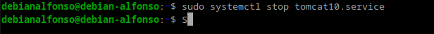
1.- Instalación de Node.js, Express y test de la primera aplicación
Para instalar NodeJS, el primer paso es actualizar los paquetes del sistema mediante un sudo apt update.
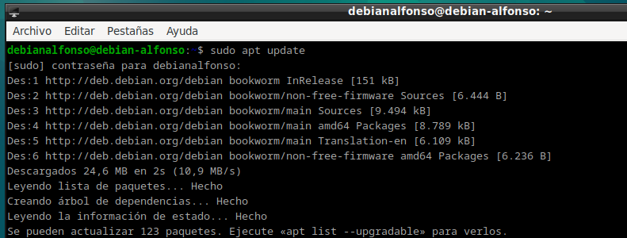
Tras actualizar los paquetes del sistema, instalamos NodeJS con el comando sudo apt -y install nodejs npm.
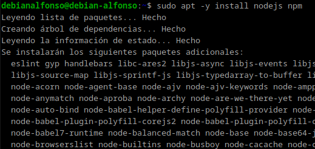
Cuando lo tengamos instalado, instalamos tambien ExpressJS con el comando sudo npm install -g express.
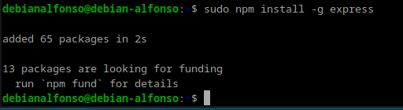
Ahora creamos un nuevo directorio con mkdir donde crearemos nuestra primera aplicacion de prueba. Despues nos meteremos dentro de la carpeta con cd e inicializamos el proyecto con el comando npm init -y.
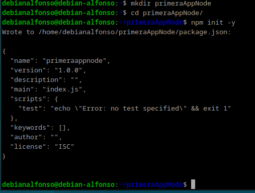
Ahora instalamos ExpressJS localmente en este proyecto con el comando npm install express.
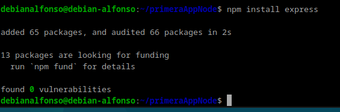
Tras eso creamos un nuevo fichero con sudo nano app.js donde configuraremos nuestra primera app y añadimos el siguiente bloque:
const express = require('express')
const app = express()
const port = 3000
app.get('/', (req, res) => {
res.send('Hello. Welcome to this blog')
})
app.listen(port, () => {
console.log(`Example app listening at http://localhost:${port}`)
})
Quedaria de la siguiente forma: 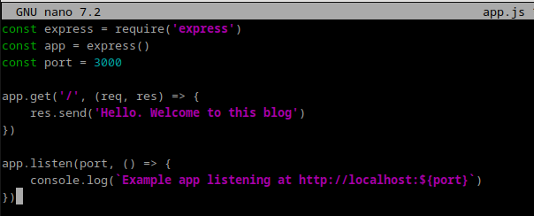
Y por ultimo corremos la aplicación node app.js y deberiamos ver en la consola el siguiente mensaje:
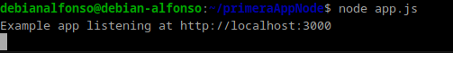
Y si accedemos al navegador veremos el contenido del archivo:
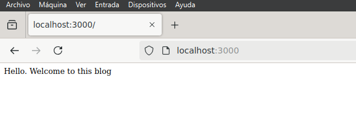
2.- Despliegue de una nueva aplicación
Para este paso, clonaremos un repositorio de github de un proyecto ya creado con el comaando
git clone https://github.com/contentful/the-example-app.nodejs.git
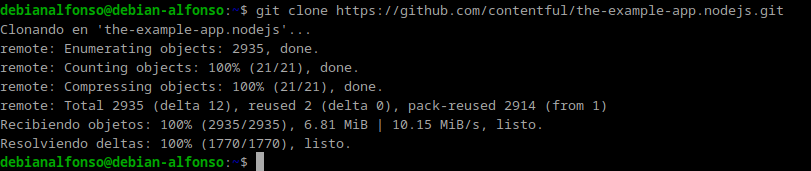
Nos metemos dentro del directorio con cd the-example-app.nodejs e instalamos las librerias neecesarias con npm install
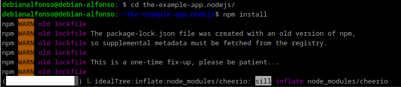
Cuando se complete la instalaciun de las librerias, podremos iniciar la aplicacion con el comando npm run start:dev
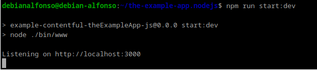
Nos metemos en el navegador y vemos el contenido:
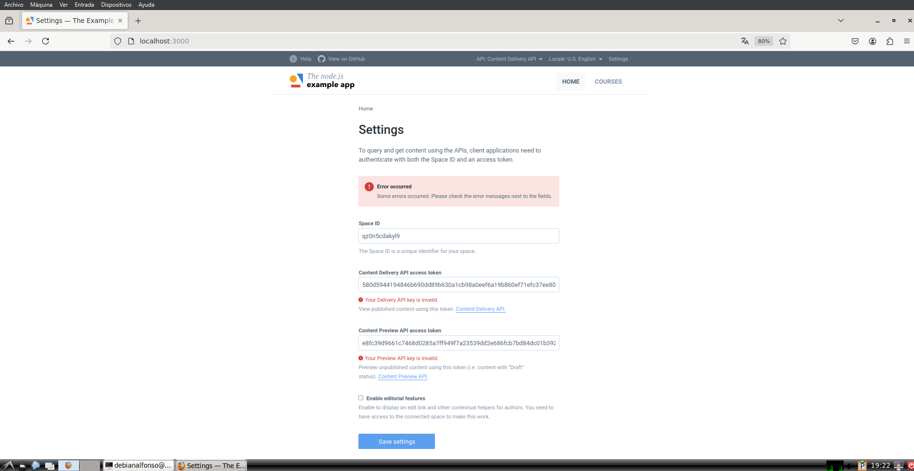
3.- Cuestiones
- Cuando ejecutáis el comando npm run start:dev, lo que estáis haciendo es ejecutar un script. ¿Donde podemos ver que script se está ejecutando?
En el fichero package.json. En este fichero estan establecidos todos los comanmdos disponibles relaacionados con la aplicacion. 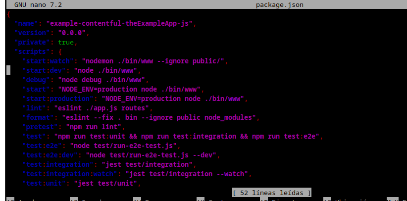 ¿Qué comando está ejecutando?
Esta ejecutando node ./bin/www.
Parte 2.- Despliegue con Netlify
Para comenzar con el despliegue en Netlify, empezaremos clonando un nuevo repositorio de github con git clone, que será https://github.com/StackAbuse/color-shades-generator
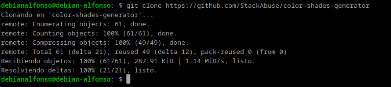
Accedemos al repositorio que acabamos de crear con cd e instalamos los módulos necesarios de netlify con el comando sudo npm install netlify-cli -g
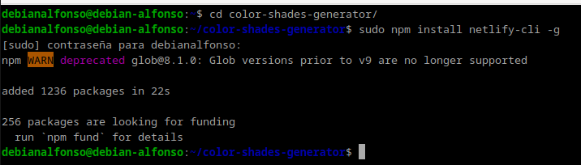
El siguiente paso será crearnos una cuenta en Netlify y generar un token. Después de registrarnos veremos la siguiente pantalla:
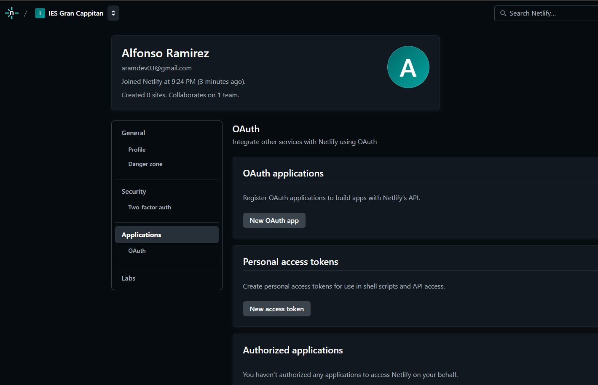
Pulsamos en New access token en el apartado de Personal access tokens y seguimos los siguientes pasos:
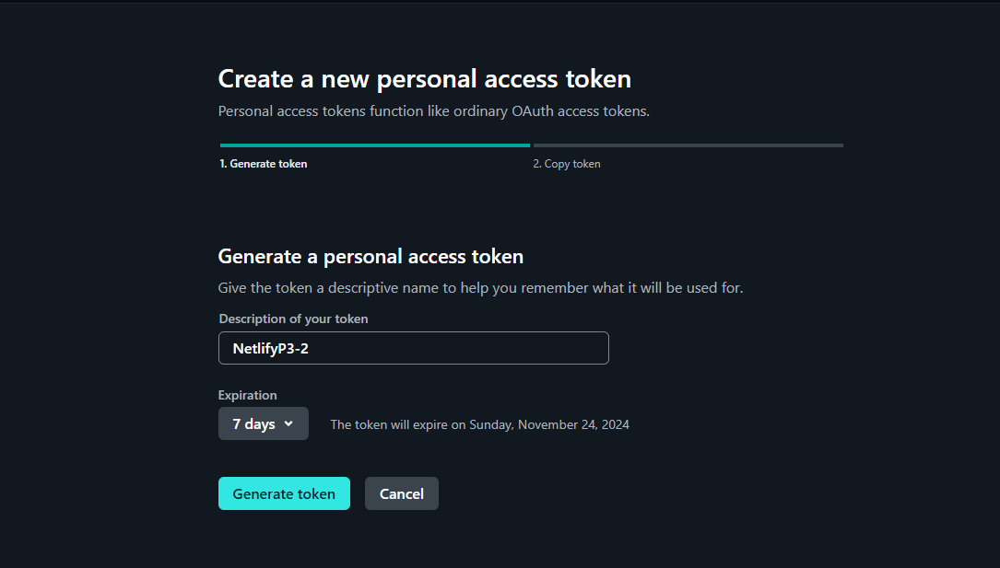
Tras eso, pulsamos en Generate Token y ya tendremos nuestro token disponible. El siguiente paso es exportar nuestro token almancenandolo en una variable, eso lo hacemos con el comando:
export NETLIFY_AU $Token.
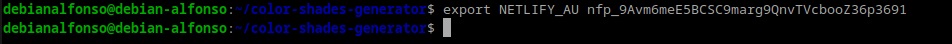
Ahora ya podremos loguearnos con netlify login. Tras poner este comando se nos abrirá el navegador pidiendo que autoricemos, pulsamos en autorizar y nos aparecerá lo siguiente en la terminal:
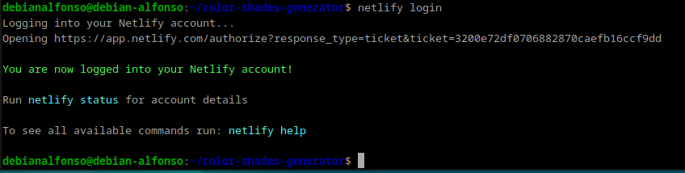
Primero, deberemos instalar todas las dependencias con el comando npm install
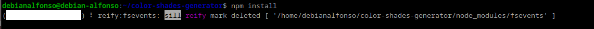
Y cuando ya las tengamos instaladas hacemos un npm run build
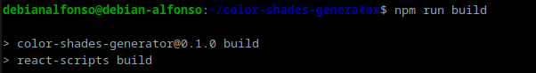
Tras esto, ya podemos hacer un netlify deploy para desplegar nuestra aplicación.
- Seleccionamos la opcion de
Crear y configurar un nuevo sitio. - Seleccionamos el
Equipo. - Asignamos un nombre.
- Asignamos la ruta de despliegue del proyecto clonado, es decir,
./build. 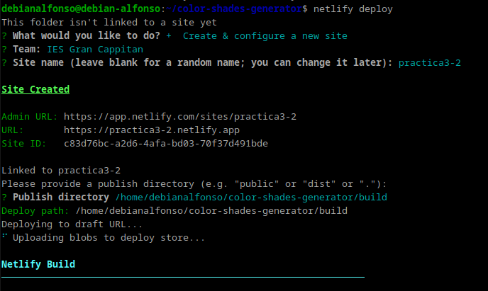
Si todo ha ido bien, nos apareceran estos mensajes:
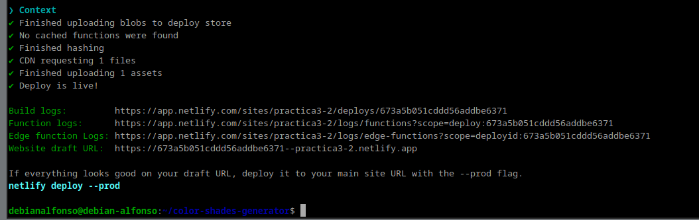
Cogemos la direccion del apartado Website draft URL y comprobamos que se vea el contenido:
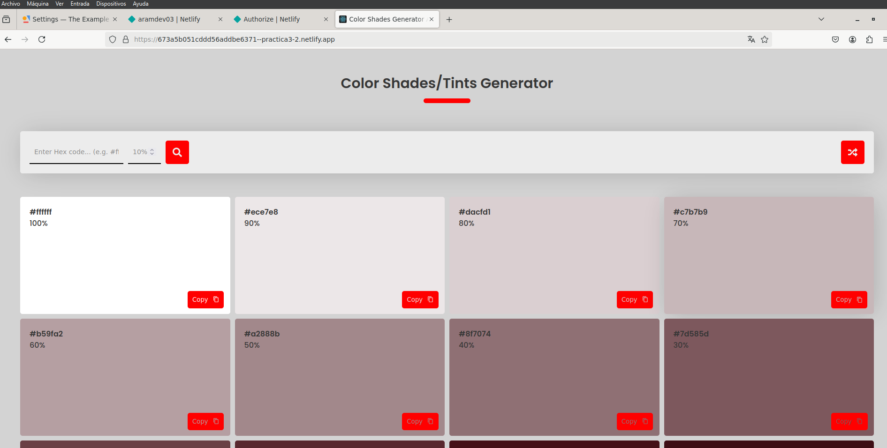
Ahora realizaremos el despliegue a producción con el comando: netlify deploy --prod
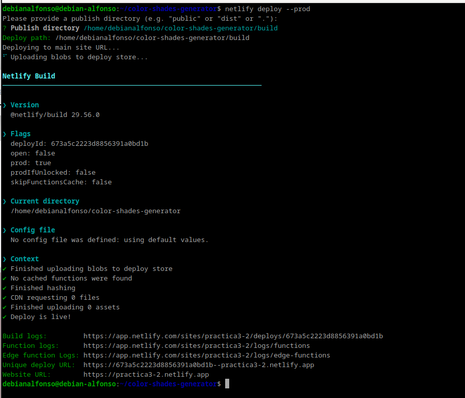
Cogemos el último enlace y comprobamos que se ve el contenido:
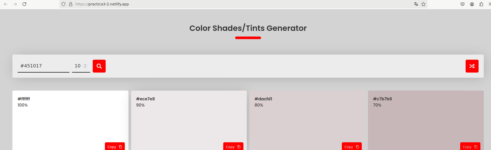
2.1.- Despliegue mediante conexión con Github
Para realizar este paso, vamos a eliminar el despliegue que habíamos creado anteriormente.
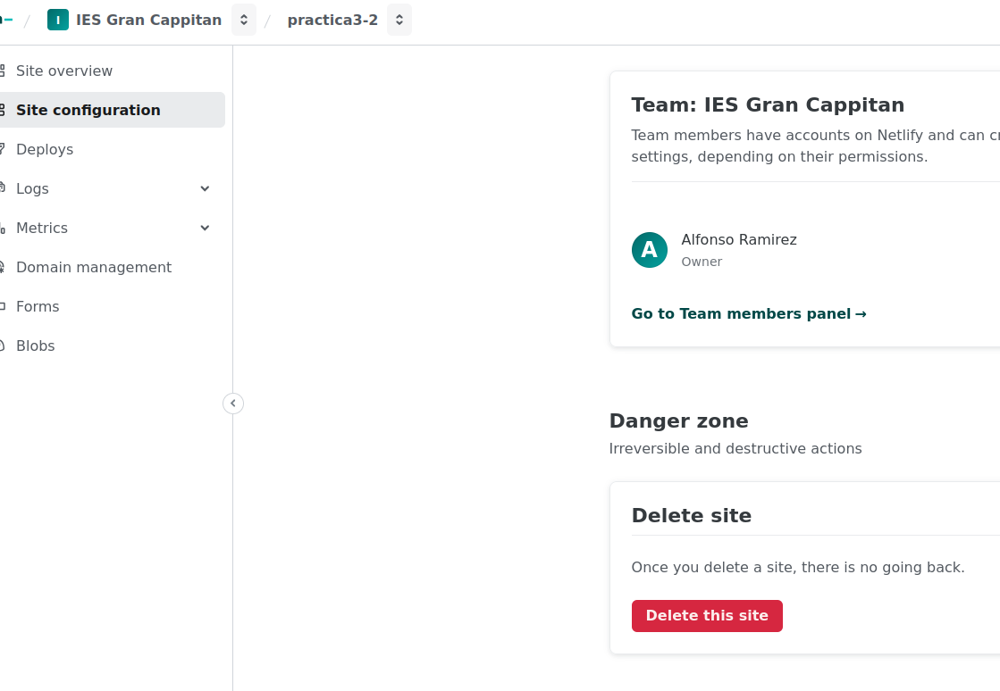
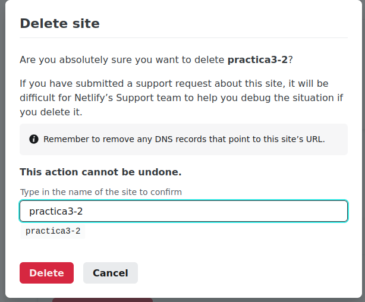
Ahora eliminamos el repositorio que clonamos anteriormente con el comando rm -rf color-shades-generator:
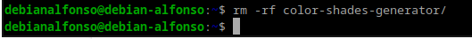
Tras estos pasos, importamos un archivo .zip de un repositorio a través del comando:
wget https://github.com/StackAbuse/color-shades-generator/archive/refs/heads/main.zip
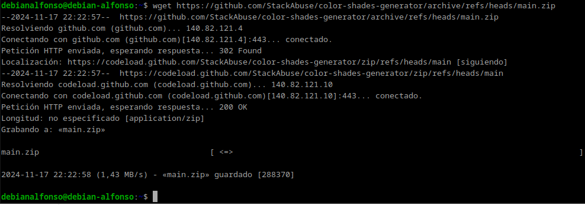
Tras importar el archivo, creamos un nuevo directorio con mkdir donde descomprimiremos el archivo con el comando sudo unzip main.zip -d $NombreDirectorio.
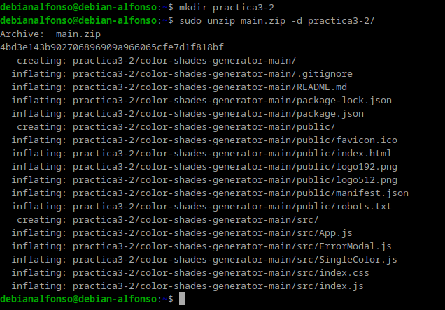
Ahora accedemos al directorio y creamos un nuevo repositorio en Github: 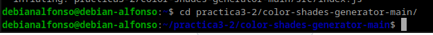 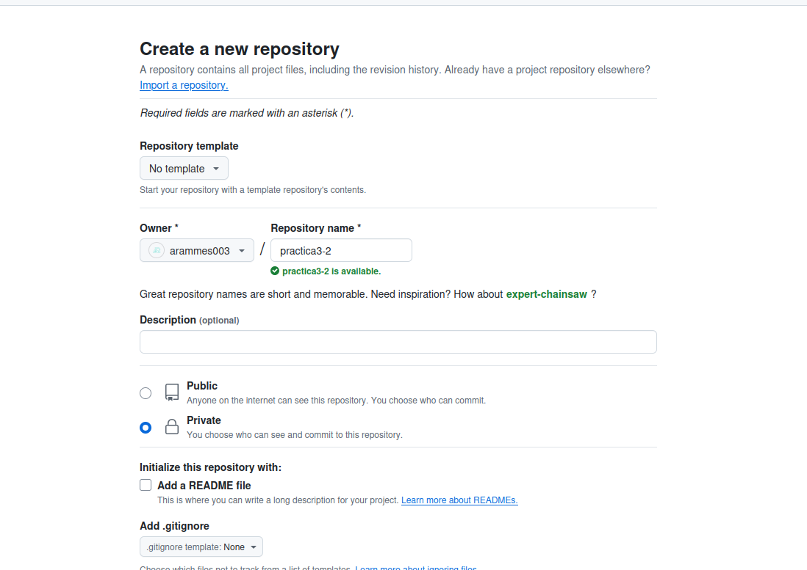
Tras esto, seguimos los siguientes comandos:
sudo git init
sudo git add .
sudo git commit -m "Subiendo el codigo"
sudo git branch -M main
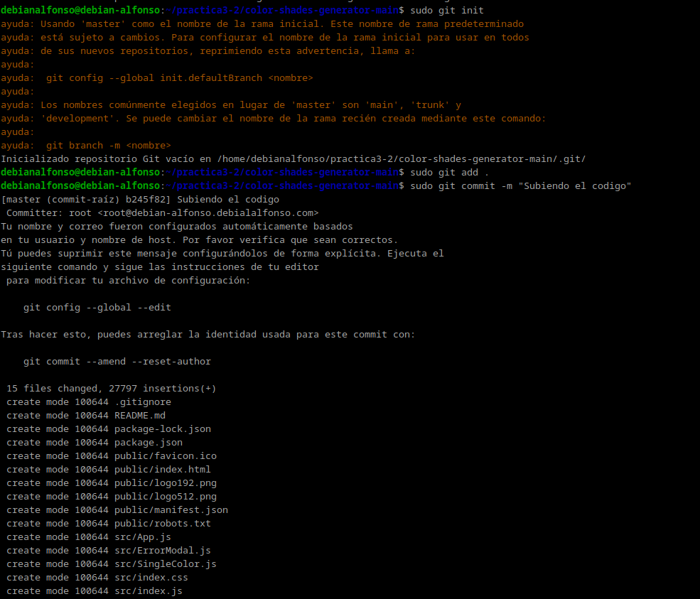 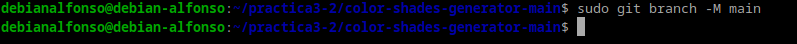
Y ahora solo queda referenciar la carpeta al repositorio, para ello usamos los siguientes comandos:
sudo git remote add origin https://github.com/arammes003/practica3-2.git
sudo git push -u origin main
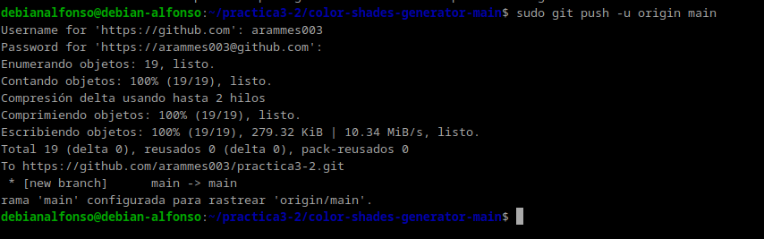
Ahora que ya está enlazado el código a Github, entraremos en el sitio web de Netlify y desde el dashboard le daremos a importar un proyecto existente de git.
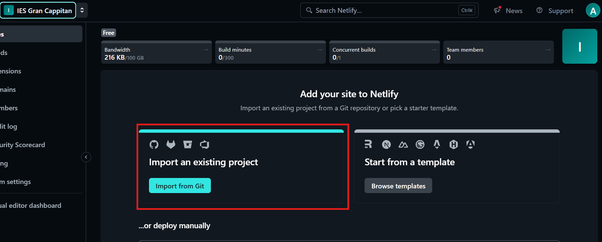
Le indicamos concretamente que sea de Github:
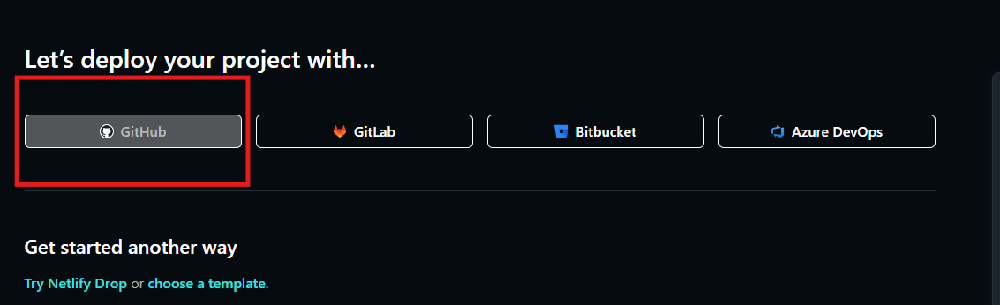
Y nos saltará una ventana pidiendo que autoricemos a Netlify a acceder a nuestros repositorios de Github: 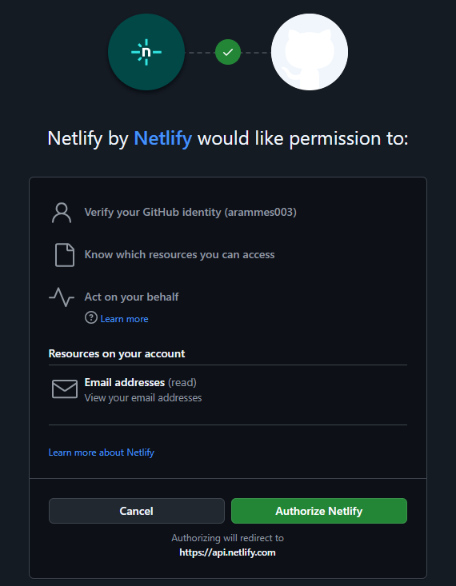
Luego le indicamos que no acceda a todos nuestros repositorios, si no sólo al repositorio de la práctica.
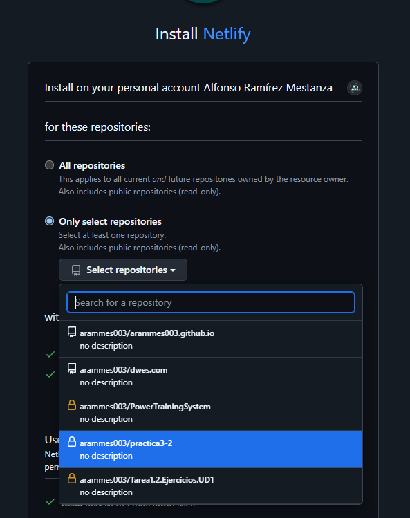
El próximo paso es desplegar la aplicación.

IMPORTANTE Tras el deploy, deberemos cambiar el nombre de la aplicación por nombre-practica3-4.
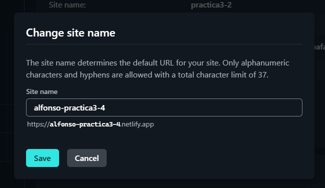
-
Ahora vamos a comprobar que el nombre se ha cambiado correctamente, para ello dentro de la carpeta
publicencontramos el archivorobots.txtcuyo objetivo es indicar a los rastreadores de los buscadores a que URLs del sitio pueden acceder.
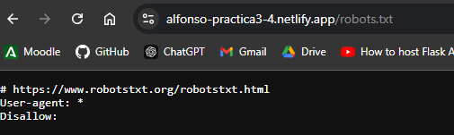 -
Dentro de la carpeta
public, utilizaremos un editor de texto para modificar el archivorobots.txty pondremos nuestro nombre y apellido.
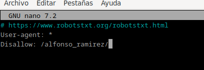 -
Hacemos un nuevo commit para que se apliquen los cambios de manera automática.
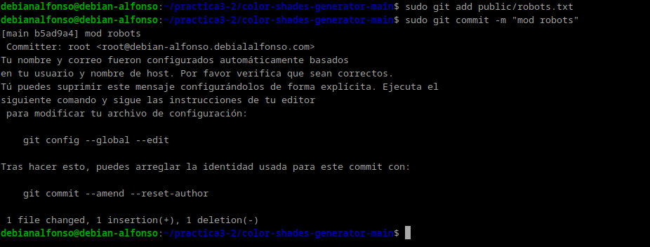 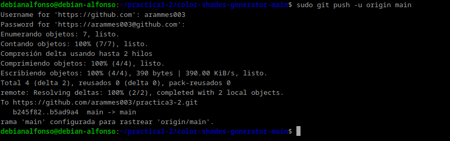
Y lo podremos comprobar en nuestra página de Netlify tras realizar el push.
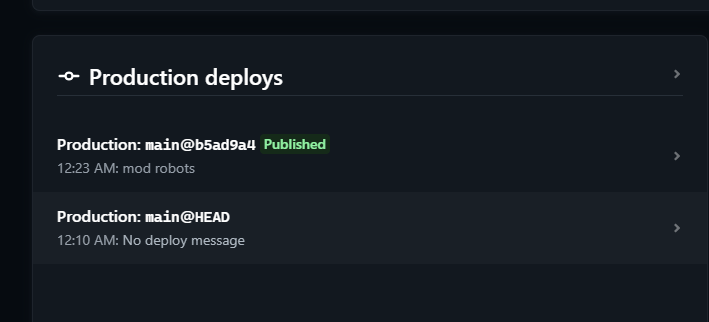
Y tras ello, también lo comprobamos en el navegador web. 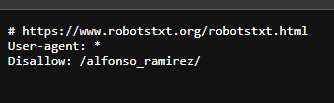
3.- Cuestiones
- Investiga y explica que es un Dyno en terminología Heroku.
Es una unidad de ejecución ligera que se utiliza para ejecutar aplicaciones en la plataforma.
- En Heroku no todo es de color de rosa, tiene sus limitaciones y desventajas. Busca, investiga y explica algunas de ellas detalladamente.
Tiene costos elevados: Escalar aplicaciones en Heroku puede volverse caro, especialmente al usar múltiples Dynos o bases de datos grandes.
Limitaciones del plan gratuito: Restricciones en horas de uso, suspensión tras inactividad, y bajo rendimiento, lo que lo hace poco ideal para producción.
Rendimiento variable: No es óptimo para aplicaciones con alto tráfico o necesidades avanzadas sin costosos upgrades.
Falta de soporte avanzado: Configuraciones complejas o tecnologías modernas como Jamstack no están tan bien soportadas como en otras plataformas como AWS o Vercel.
Dependencia del ecosistema: Migrar desde Heroku puede ser complicado y costoso.